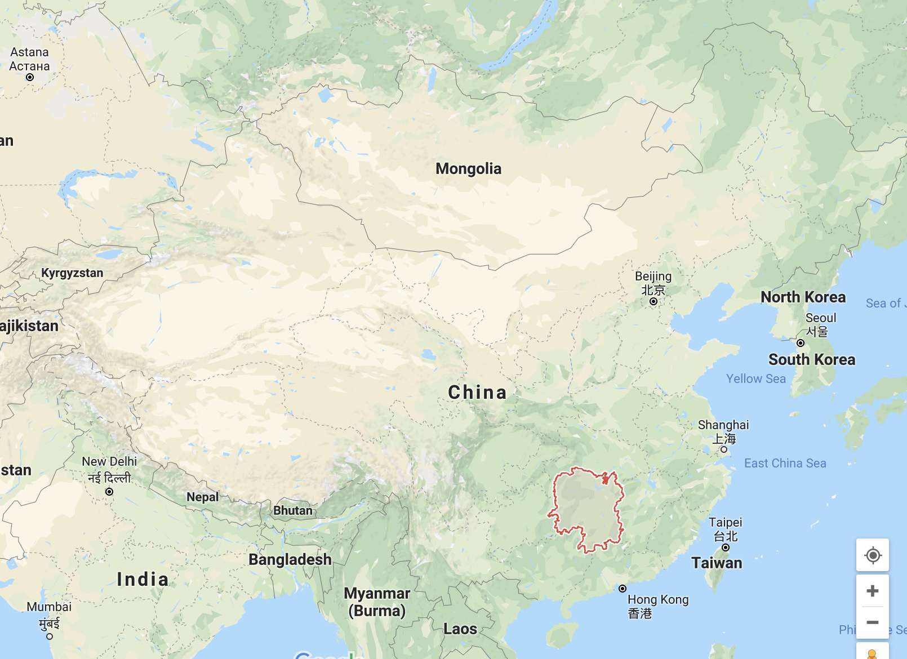

Hunan Cuisine 湘菜 Xiāngcài

Hunan Cuisine 湘菜 Xiāngcài —Quite spicy, with a hot and sour taste, favoring sautéing, stir-frying, steaming and smoking.
Most tourists who visit China get to know the spicy red hot flavors of Sichuan cuisine since it is a tourist favorite. But in Hunan Province, the food is maybe even hotter. Their food tastes less numbing and sourer.